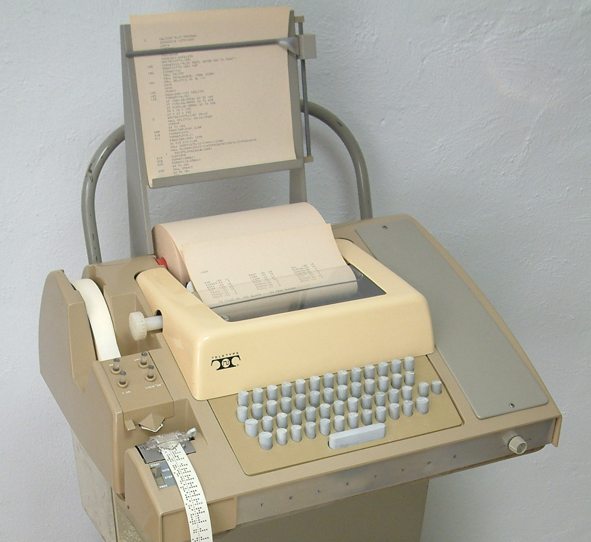

Loading the content from content/…
A presentation by Hoop Somuah · 2026
From Teletype to Rhythm of Business
The terminal is sixty-three years old, and the most agent-friendly interface humans have ever built. Three acts on how to put it to work for an executive team.

If you only do one thing
Open the issues tab and pick one.
The presentation lives. The repo lives. The next move is yours, in plain text, committed to a branch, reviewed in a PR. Welcome to the rhythm.
— Hoop · hoopsomuah/cli-agents